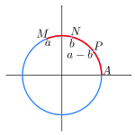

item 1. Sejam \(\stackrel{\frown}{AM}, \stackrel{\frown}{AN}\) e \(\stackrel{\frown}{AP}\) arcos trigonométricos de medidas \(a, b\) e \(a-b\text{,}\) respectivamente.

Figura1.7.2.Arcos \(\stackrel{\frown}{AM}, \stackrel{\frown}{AN}\) e \(\stackrel{\frown}{AP}\text{.}\) As coordenadas dos pontos \(A, P, N\) e \(M\text{:}\)
\(\displaystyle A = (cos(0),sen(0)) = (1,0);\)
\(\displaystyle P = (cos(a-b), sen(a-b));\)
\(\displaystyle N = (cos(b), sen(b));\)
\(\displaystyle M = (cos(a), sen(a)).\)
Lembrando que a distância entre dois pontos \(p_1=(x_1,y_1)\) e \(p_2=(x_2, y_2)\text{,}\) do plano cartesiano, é dado por
\begin{equation*}
S = \left\{ x\in\mathbb{R}~|~ x = \frac{\pi}{6}+2k\pi ~\text{ ou }~ x = \frac{5\pi}{6}+2k\pi,~ k\in \mathbb{Z} \right\}.
\end{equation*}